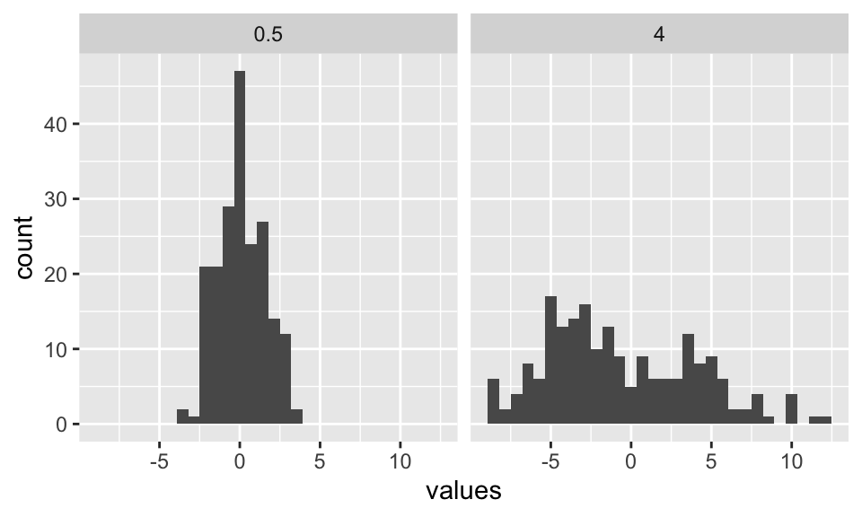
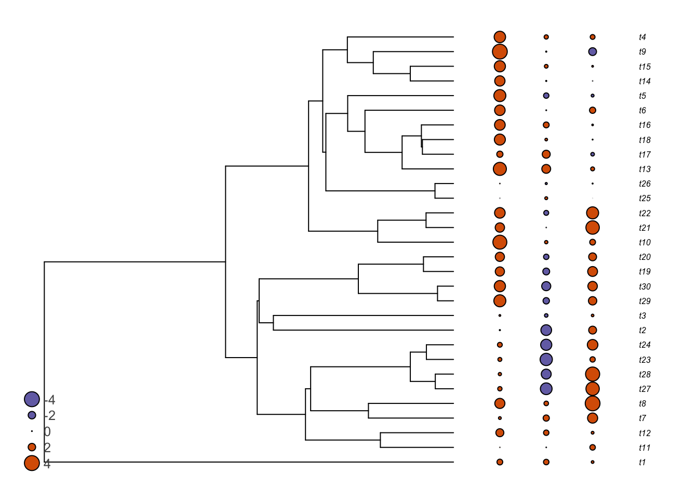

12 The Brownian Motion (BM) model
When we want to account for the non-independence of species due to their evolutionary histories in statistical analyses, a model of evolution is necessarily implied. Indeed, we assume that traits evolved through time (along the phylogeny) and that closely related species are more likely to be more similar on average at a given trait than distantly related species. In evolutionary biologogy, the more basic model (often used as a null model in many analyses) is the Brownian motion model. This model of evolution is named after Robert Brown, a celeb botanist that published an important Flora of Australia in 1810. He was also the first to distinguish gymnosperms from angiosperms. His discovery of the Brownian motion is due to the observation that small particules in solution have the tendency to move in any direction, an observation first made while observing Clarkia pollen under a microscope. The explanation would come later, in terms of random molecular impacts.
Mathematicians have constructed a stochastic process that is intended to approximate the Brownian motion. In this model, each step is independent from the others and can go in any direction. The mean displacement is zero and the variance is uniform across the parameter space. The displacements can be summed, which means that the variances of the independent displacements can be added up. If \(\sigma^2\) is the variance of a single displacement, the variance after time \(t\) will be \(\sigma^2t\). When the number of steps is large, as in a phylogenetic context, the result is normally distributed.
When applied to phylogenies, the Brownian motion model is kind of applied indepenpenty to each branch of the phylogeny. That allows to model the amount of change that occured along a given branch. If the variance of the Brownian motion model is \(\sigma^2\) per unit of time \(t\), then the net change along a branch of time \(t\) is drawn from a normal distribution with mean \(0\) and variance \(\sigma^2t\). This model can also be represented mathematically the following way, such as the amount of change for character \(X\) over the infinitesimal time in the interval between time \(t\) and \(t+dt\) is:
\[dX(t)=\sigma^2 dB(t),\]
where \(dB(t)\) is the gaussian distribution. Importantly, this model assumes that:
- Evolution occuring in each branch of the phylogeny is independent of that occuring in other branches.
- Evolution is completely random (i.e., no selection).
The parameter \(\sigma^2\) in the model gives the variance, or in other word the speed of evolution. The higher the variance, the faster the character will evolve. Here are two examples of simulated characters on a tree of 200 species with \(\sigma^2=0.5\) and \(\sigma^2=4\).

A more thorough introduction to the Brownian Motion model can be found in Felsenstein (2004, chapter 23).
The Brownian motion model is often said to model neutral drift, although a good fit to this model does not necessarily means that the data evolved via random drifts as other processes can also result in BM-like patterns (Hansen and Martins, 1996).
Note also that the model is stochastic. That is, even if two closely related species are more likely to share similar character states than a distant one, this is only true on average. For any given simulated character, closely related species can sometimes be more different than to a distant species. Look at the following figure, that shows three traits simulated under the Brownian motion.
